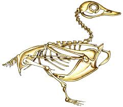

Kaczki mają bardzo ciekawą budowę, która pozwala im przeżyć w różnych wodach i klimatach na całej kuli ziemskiej. Dziób kaczki ma spłaszczony, łopatkowaty kształt, który ułatwia filtrowanie pokarmu z wody. Mają nieco grubszą końcówkę na dziobie, zwaną paznokciem. Ta cecha pomaga im ukorzenić się w błocie lub trawie w celu znalezienia pożywienia, a u niektórych gatunków kaczek paznokcie są bardziej widoczne lub mogą mieć inny kolor niż reszta dzioba.Przód szyi to gardło ptaka, która składa się z 14 kręgów i ma opalizujący połysk,który rozróźnia szyję od reszty upierzenia. Skrzydła kaczki są bardzo charakterystyczne.Są przylegające do tułowia ptaka i ich lotki są długie i szerokie. Mają różne kolory na piórach pierwotnych i wtórnych. Często na nich są pręty lub kolorowe łaty. Dobrze zbudowana kaczka ma szeroką i głęboką pierś. Większość kaczek ma stosunkowo krótkie nogi. Ich łapy są pokryte dobrze przylegającymi rogowymi tarczkami. Kaczki mają cztery palce zaopatrzone w błonę pławną i są zakończone pazurem. Mają krótki ogon.
